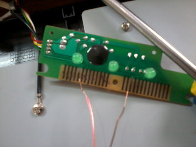
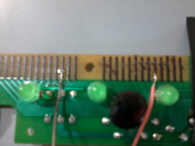

I’ve seen a VIM USB pedal tutorial before that triggers the i key, so we’re able to enter in Insertion mode with our foot.
I want to build something similar, but want to put effort in practical utility and simplicity. So i thought that trigger the Esc key would be more convenient due to the small, although cumbersome arm movement that requires to reach it. And you know, the i key is just under your finger so there’s no much of a time saving using a pedal.
I’ve decided that the pedal should be directly attached to the keyboard circuitry, so here is what I’ve done.
Materials
- Telephone cable (4 wires inside), every kind of cable can be used (we need just 2 wires)
- NA Interrupter
- Cassette case

Of course you can change this materials with what you have in home.
Construction
Software
When we push a key an interrupter is activated and two contacts are connected at the keyboard integrated circuit which sends the appropriate ScanCode, which is then converted to a KeyCode that the OS can handle.
Based on this we need to find out which combination of contacts at the circuitry correspond to the required key, so we have two options for this:
Disassemble the keyboard en follow all the traces from the key to the circuitry (and use a marker for this), but is a little boring and annoying task.
Use software that tell us what KeyCode has been received so we can use a wire to connect every possible combination in the keyboard circuitry until we find the correct one. I’m using GNU/Linux so the
showkeycommand will come in handy for this.
If you choose the first option just mark down which two contacts are the appropriate. But if you choose the second option we need no know something: The people who wrote showkey decided that the software should automatically close after 10 seconds after last key press, so we need to deal with this with two more options:
Modify
showkeysource code to remove that timeoutExecute it with a shell infinite loop (I’ve choose this one)
For option number 2 here is the solution (as root):
# while [ 1=1 ]; do showkey -k; sleep 1; doneThis way showkey will show us every key press (press and release).
Hardware
Now we can disassemble the keyboard (with the shell loop running), take off the circuitry and use a wire to connect every contact until the appropriate keycode shows up in screen, in this case we’re looking for a keycode 1, that corresponds with Esc key.
I’ve found it connecting pin #3 in the first row with pin #5 in the second row.
Now we can scratch the pins surface a little bit to revel the copper, but just enough so we can solder the wires (a couple millimeters will be ok).
(In this picture I’ve used incorrect pins. I’ve used pins 5-3 instead of 3-5, sorry..)

Now we can solder the wires to the pins:
 
Ok!, now just put the circuitry back in place, and use some hot glue so the wires stay in place.
Lets take a look on the pedal side:
Glue the switch in the cassette case and solder the wires in the interrupter pins.
Now we can have our fingers always in the home row while editing.